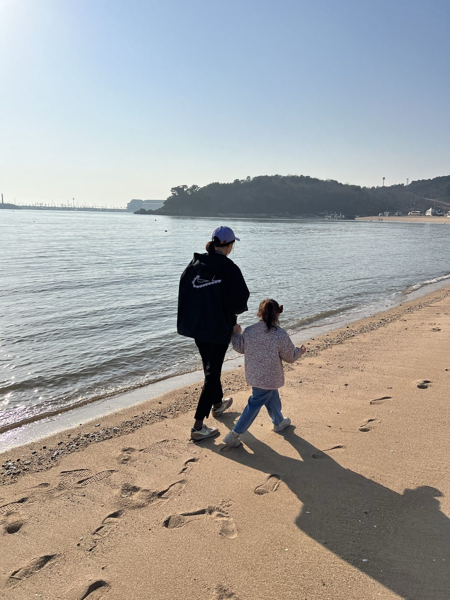

01 · 갈 수 있을 때
다시는 갈 수 없는 길.
아버지와 함께 여행을 왜 더 많이 못했을까. 사랑합니다, 아버지.

여행별 · LPH-B613-03 · MEMORY LINE
움직여라.
자포자기의 마음이 들면 사람은 자꾸 한곳에 있으려 한다. 그래도 자리를 옮겨라. 다른 것을 보고, 듣고, 경험해라.

서 있는 곳이 바뀌면
보이는 것도 달라진다.
아버지와 함께 여행을 왜 더 많이 못했을까. 사랑합니다, 아버지.

춘천의 강이 보이는 독채 펜션. 차를 세우고 짐을 내려놓은 뒤, 익숙한 자리에서는 보이지 않던 것이 보였다.

서해 바다의 추억. 우리 모두가 마스크를 끼고 살았던 팬데믹 시절에도, 함께 걷는 동안 생각은 다시 움직였다.

부산은 인천과 다르더라. 다른 도시에 서 보았기에, 돌아온 자리도 전과 같지 않았다.
위치를 바꿔라.
시선을 바꿔라.
기억의 노선을 따라왔다면, 이제 문장과 장면을 더 깊이 보거나 이 별이 만들어진 방식을 확인할 수 있습니다.
여행별 · 문장
문장 · 춘천
낯선 자리 · 생각의 방향
낯선 곳에 머물면 생각의 방향도 조금 바뀐다.
차를 세우고, 짐을 내려놓고, 창밖의 물길을 바라보던 시간.
문장 · 서해
팬데믹 · 가족의 시간
바닷가를 걸으면 멈춰 있던 생각도 조금씩 움직인다.
그 시절의 공기와 거리감이 아직 사진 안에 남아 있다.
여행별 · 장면


여행별 · 디자인
새벽역의 푸른 회색은 아버지와 캐리어가 있던 플랫폼에서, 종이표의 아이보리는 떠나기 전 손에 쥔 마음에서 나왔습니다. 곧은 노선 대신 굽은 선을 쓴 이유는 기억이 장소 순서대로 남지 않기 때문입니다.
사진과 문장이 쌓일수록 이 선에는 새로운 정류장이 생깁니다. 디자인은 완성된 장식이 아니라 기억과 함께 자라는 지형입니다.
새벽역기다림과 출발 전의 공기
종이표문장을 천천히 읽는 표면
신호등지금 움직이라는 작은 표시
캐리어함께한 사람과 이동의 물성
NEXT CONSTELLATION